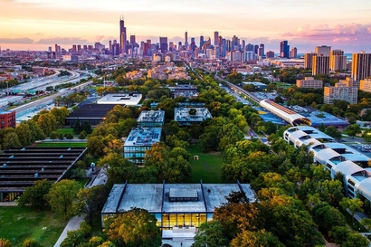

Rana F. Soylu's Resume

Contact information
- E-mail: rsoylu@hawk.iit.edu
- School: Illinois Institute of Technology
Education
- Sabahattin Zaim Anadolu Lisesi(HS), Istanbul, Turkey
- Elk Grove High School, IL
- Illinois Institute of Technology (currently attending), BS in Computer Science
Skills
- Good at communication
- Quick learner
- Leader in team settings
- Graphic design skills
Experiences
- Personally designed internationally distributed official schoolwear that brings different cultures together.
- Participated in organizing large-scale dinners for University students of different faiths.
- Took the leader role in many clubs throughout highschool.
- Created official art for school newspaper.